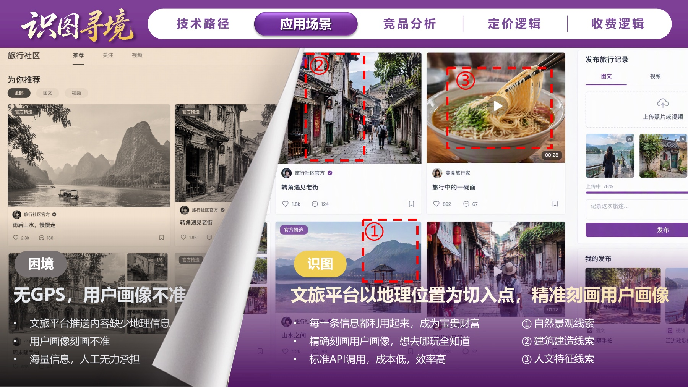
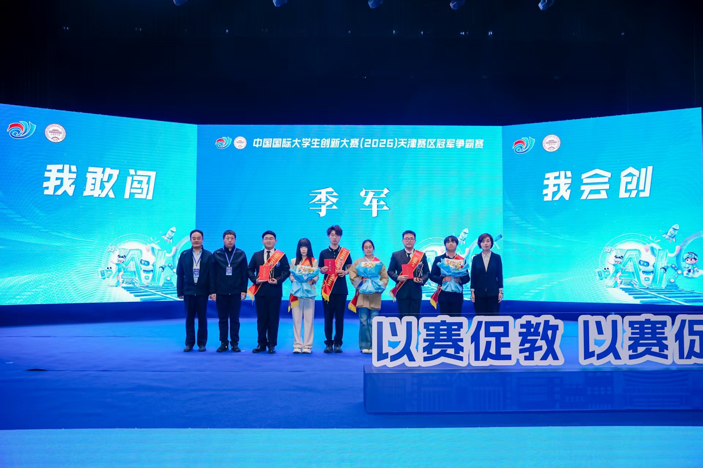
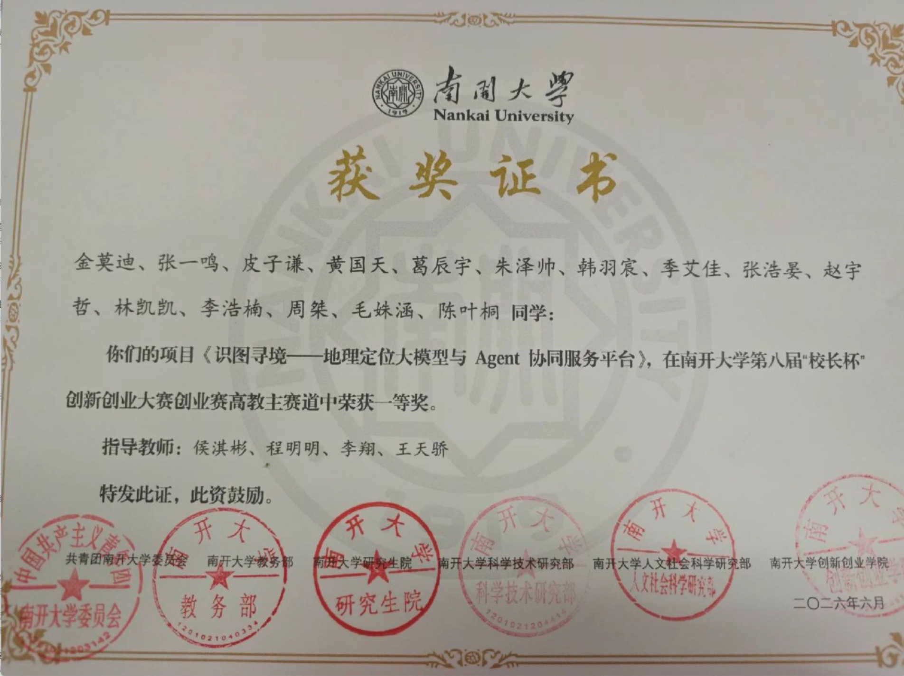

模型
识图 · 图像地理定位
从自然景观、建筑构造与人文特征中提取视觉线索，推断图像拍摄地点。
创新创业 · 南开大学
地理定位大模型与 Agent 协同服务平台
识图寻境是由金莫迪负责的创新创业项目，以 GeoAgent 等研究为基础，探索图像地理定位与 Agent 协同服务，连接图片、地点信息与文旅目的地。
项目负责人：金莫迪
项目围绕“识图”模型、“地衡”平台与“寻境”Agent，探索地理定位研究面向实际场景的应用。
模型
从自然景观、建筑构造与人文特征中提取视觉线索，推断图像拍摄地点。
平台
连接地理定位能力与应用需求，为地点信息补全及下游服务提供支撑。
智能体
探索 Agent 辅助的服务流程，将图像理解、地点查询与目的地信息联系起来。
文旅图片常常缺少 GPS 或地点标签。识图寻境探索通过视觉地理定位，帮助文旅平台建立内容与地点之间的联系。


中国国际大学生创新大赛（2026）天津赛区。图为冠军争霸赛季军颁奖现场。

南开大学第八届“校长杯”创新创业大赛，创业赛高教主赛道。